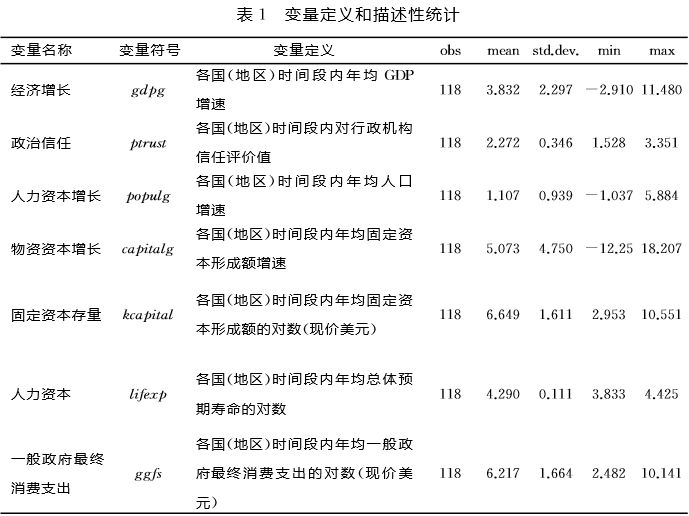
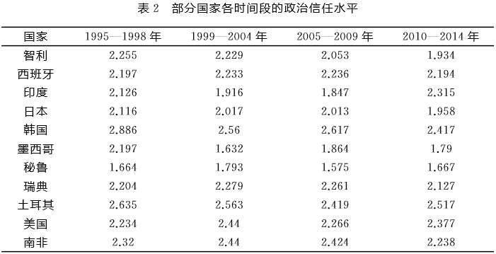
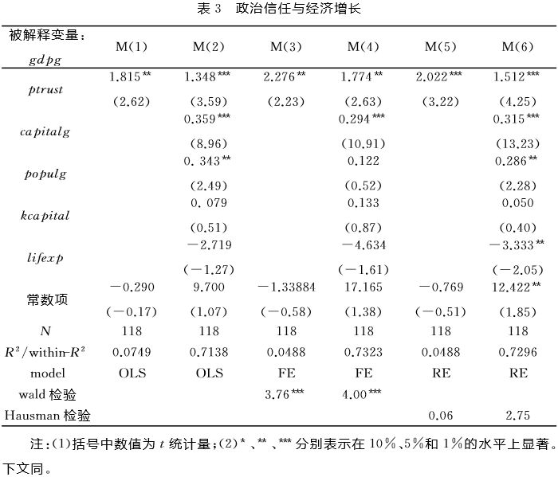
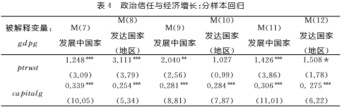
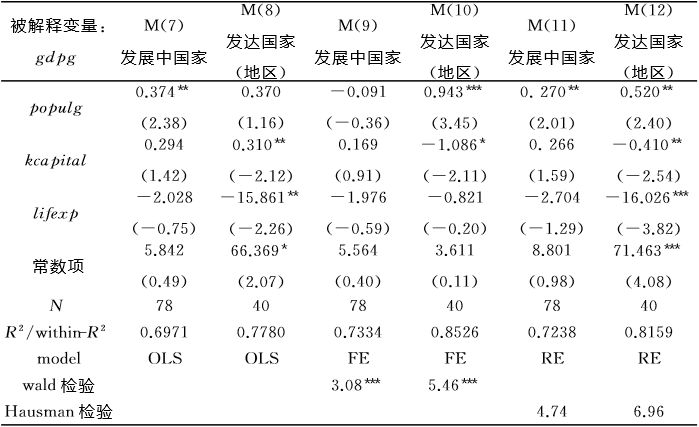
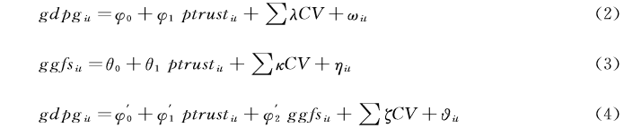
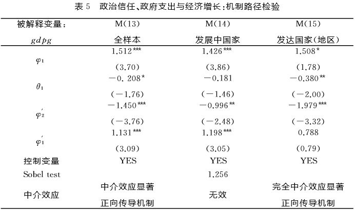
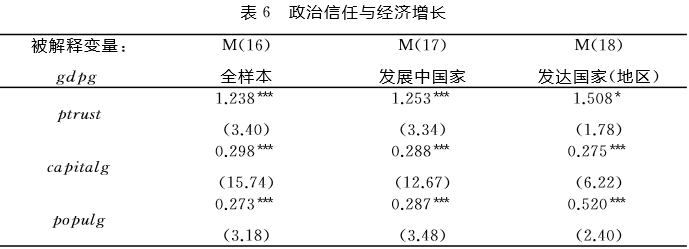
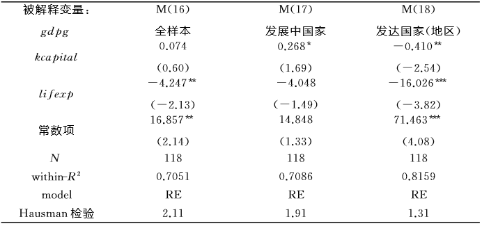

收录于合集

简
乔志程 ，暨南大学经济学院；
黄薇 ，东莞理工学院城市学院商学院；
吴非 ，暨南大学经济学院，区域 金融政策研究中心。
【 内容提要 】本文基于世界价值观调查（WVS）的调查数据，考察了51个主要国家和地区1995-2014年间政治资本的核心要素——政治信任对各国经济增长的影响。研究确证了政治信任对于经济发展的积极作用，但这种积极作用在不同发展程度的国家（地区）有着异质性差异。进一步地，本文通过中介效应检验发现，政治信任会抑制政府的消费支出水平，从而减少政府对经济的干预，并最终达成了较为合意的经济增长。这一中介路径机制在发达国家（地区）中较为显著，而在发展中国家则不明显。上述发现不仅具有政治意义，也饱含经济价值。由此，增强民众的政治信任感知度能够实现政府施政和民众配合的双重适配。此外，在较好的政治信任环境下如何塑成对政府（开支）行为的合理约束，成为提升地区经济潜能的必由之路。
【 关键词 】政治信任 经济增长 一般政府最终消费支出 中介效应
一、引言
政治信任是现代社会体系内“政府—民众”关系的基石，是微观民众个体同宏观政治机构（体制）的重要联结纽带。 具体来看，政治信任折射出了国家（地区）政治机构及其行为受到民众的认可程度，是政府施政效果的“晴雨表”，并由此展现出政府执政的合法性和正当性。一个政府、民众普遍互信的社会更具效率和活力，政治信任为政府政策制定提供了凝聚力，为政策执行提供了“润滑剂”，是政府公信力的微观基础，更是民众互助合作行为的有效驱动（孟天广，2014）。从这个角度来看，保持较高水平的政治信任以维持国家（地区）的有效治理，已然成为当前政府体制变革导向中的一个重要议题，更有学者指出政治信任是政治资本的核心要素，对于国家运转、发展的重要性不言而喻（Newton，1994）。自西方民主国家面临信任危机（trust crisis）的冲击以来，政治信任逐步成为学术界研究的重要领域。 当前的研究文献，多集中在探讨政治信任概念的重塑与细腻化（游宇和王正绪，2014）、政治信任具体的测度（孟天广，2014）、政治信任的形成机理（ Keele，2007）与影响因素（胡荣等，2011；郑建君，2013）等领域中，相关的研究成果十分丰厚。 但对于政治信任如何“落地”，即政治信任如何影响到现实的经济、 社会生活，却鲜有文献涉猎，对于“政治信任—经济增长”之间的传导影响机制更 是处于“黑箱”之中，这需要进一步地进行实证检验和理论解释。
据此， 本文提出的问题是，世界各国经济发展的差异背后，政治信任扮演何种角色？这种推动在不同国别之间是否会产生异质性差异？其中的肌理何在？ 这些问题仍需要做进一步的理论疏导和实证研究。这对于我们了解政治信任的作用及其机制，并从更深层次了解经济增长的内在机制和可能路径有着十分重要的意义。
二、文献梳理与假说提出
韩顺法和李向民（2009）认为，当前的经济增长理论似乎仍不足以解释国家（地区）经济长期增长的“秘密”。 特别地，不同国家在相似经济社会条件下衍生出的巨大增长差异更是让经济增长理论陷入了困境，从而提出了精神资本的研究视角。在某种程度上，韩顺法和李向民（2009）的研究导向可归为新制度经济学派系，其更重视社会层面因素，提出以社会资本理论阐释经济增长变化。 “社会资本”作为一种新的资本性要素，由Bourdieu首次提出，与物质资本、金融资本和人力资本一道，社会资本亦可有效作用于经济社会的发展。 乔纳森（2005）的研究将社会资本拆解为微观、中观和宏观三个层次。具体来看，微观层次的社会资本存在于家庭、亲密朋友、邻居以及社区团体；中观层次的社会资本存在于企业之间，以及企业与行业协会、研究院、政府等机构之间的各种合作组织或联盟；宏观层次的社会资本在整个国家和社会中存在，主要指影响人们建立合作关系的制度与组织、国家的凝聚力、民族精神以及公众对政府的信任等因素（杨灿和刘赟，2010；陈运平和黄小勇，2008）。在乔纳森的分类中，宏观社会资本类同于政治信任，但关于政治信任是否属于社会资本学界仍有不同观点。陈希晖等（2014）指出信任可以分为社会信任和政治信任。社会信任是社会资本的重要组成部分，是维系社会秩序的底线；政治信任是政治资本的重要组成部分，是政治权力和政治制度合法性的基础（肖唐镖和王欣；2010）。政治信任不同于社会信任的原因在于：其一，政治信任不仅包含人际信任，也包含着组织信任，政治信任中的人际信任是指公众对政府行为体、政府行政人员的信任，而公众对政治制度、政府机构的信任则是组织信任（Wang，2005；姜晓秋和陈德权，2006）；其二， 政治信任是一种特殊的信任关系。政治信任源于政治领域，是人们对政治制度和政府的绩效、政治制度的可信性的一种理性的评估（孔凡义，2009）。 据此，政治信任作为政治资本的核心要素，需要与社会资本中的社会信任有所区分，政治资本对经济发展作用的肌理与社会资本也必然存在不同之处，需要进一步分析。
**尽管政治信任与社会信任分别类属政治资本与社会资本，但政治信任对整个社会信任体系却具有决定性和导向性的作用（赵立新和李新云，2008），因而， 其在促进经济增长方面，蕴涵着比社会资本、物质资本和人力资本更强大的动能 （ Fukuyama，1995）。**究其原因， 其一， 政治信任包括公众对行政机关和司法机关的信任，作为一种外在的保护机制，意味着承诺和正当性的预期，使得公众在面临权利损害时，预期会获得政府的有效保护。因此，政治信任增加了人们参与行动和合作的可能性，进而为多元主体间的协同与合作提供了坚实的基础，并能够降低经济主体间的交易成本。 其二， 对国家的政治信任越高，则公众在微观层面的配合度越高，从而节约公共管理运行的成本，提高政府的行政效率和政府绩效 水平，国家可以向公众提供了更为优质的公共产品和服务，这在一定程度上促进了经济的增长。 第三， 政治信任在“政府—民众”之间的博弈中扮演至关重要的角色。高水平的政治信任能使政府的治理措施、改革政策迅速传导并减少政策执行中的效果扭曲。尤其当经济、社会出现风险因素或者发生危机的时候，政治信任的作用则愈加凸显。综上所述，本文提出假设1。
假设1： 政治信任作为社会资本的一种，对经济增长具有促进作用。
如上文所述， 政治信任可以充当“政府—民众”的润滑剂，能够减少政府机构的“施政成本”并提高政府运行效率。 具体来看， 首先， 政治信任程度高意味着民众高度认同、尊重并积极配合执行政府的政策，区别于任何外在的治理机制，是一种显著高效的自我治理机制，其大大简化了政府治理的过程，提升了治理的效率和质量（杨芷晴，2016），这将减少政府的行政类支出，从而导致一般政府最终消费支出的减少。 其次， 民众的政治信任同积极参与政治活动的热情是正相关的（郑建君，2013），因此，在政治信任水平高的国家，民众不再仅仅是被动的治理接受者，而会主动广泛地参与政府治理，而在民众和政府之间的高效互动中，政府也将注意并规范自身行为。 一方面， 这将导致政府（不必要的）消费性支出 减少； 另一方面， 政府部门会逐渐退出某些领域而交由社会团体决策，简化其非必要职能，从而形成“大社会、小政府”的局面。由此导致政府规模的缩小也将进一步减少政府一般性消费的支出。
从另一个角度来看，政治信任度高引致的政府消费支出减少，可能会对国家 （地区）的经济发展带来一定裨益。 不同时期的研究文献都发现，政府消费支出都是以地方财政税收为基础的，这对私人部门经济存在强烈的挤出效应，过大的政府消费支出规模会导致资源配置偏离最优生产状态，最终阻滞经济发展（ 方福前和孙文凯 ，2014； Tsung ，2002； Barro and Hall ，1991）。不仅如此，规模过大的政府消费性支出所衍生出的财政收支压力，会通过税赋的方式转移到经济体系中，这无疑会打击民众的积极性（ 杨子晖 ，2011）。更不用说，政府一般消费支出中所可能隐藏的寻租套利空间会扭曲经济个体的激励偏好。 毛中根和洪涛 （2009）还补充道，政府的一般性消费支出规模过多，可能会为政府规模无序扩张提供便利条件，这种扩张超出了政府有效管理的合理边界，由此而生的机构臃肿、人浮于事导致的无形成本可能更为严重。综上理论分析，本文提出了第2个研究假设。
假设2： 高水平的政治信任将导致一般政府最终消费支出的减少，而这种支出减少将提升国家（地区）的经济发展水平。
三、研究设计
（一）数据来源与相关处理
本项研究的核心数据来自世界价值观调查（WVS）。世界价值观调查是世界范围内最重要、知名度最大、使用率最高的综合性跨国调查之一。 该项调查自1981年首次开展以来，现已进行到第六次。本研究采用的政治信任数据源于1995-1998年、1999-2004年、2005-2009年、2010-2014年发布的四次世界价值观调查，其他经济数据资料则来自世界银行数据库（WDI）。考虑到世界价 值观调查（WVS）每一波调查的国家都不完全一致等因素，本文的数据集为非平衡面板数据。 本文截取了1995-2014年世界范围内具有代表性的51个国家和地区，并按照联合国的发达国家划分标准，划分为发达国家及地区组和发展中国家组。 其中，发达国家及地区组包括澳大利亚、瑞士、加拿大、德国、西班牙、芬兰、法国、英国、中国香港特别行政区、意大利、日本、韩国、荷兰、新西兰、新加坡、瑞典、美国；发展中国家组包括：阿根廷、巴西、智利、中国、哥伦比亚、阿尔及利亚、埃及、印度尼西亚、印度、墨西哥、马来西亚、约旦、黎巴嫩、尼日利亚、巴基斯坦、秘鲁、菲律宾、波兰、罗马尼亚、俄罗斯、泰国、土耳其、越南、南非、阿塞拜疆、 白俄罗斯、厄瓜多尔、爱沙尼亚、加纳、哈萨克斯坦、吉尔吉斯斯坦、乌兹别克斯坦、乌克兰、乌拉圭。
（二）变量定义
1．被解释变量
国家（地区）经济发展状况（gdpg）。学术界通常用 GDP总量来测度国家（地区）的经济发展状况，本文也依循该路径进行研究。 在GDP的测度上，本文采用了国家（地区）GDP的增长速度指标，以此能更好地反映出国家（地区）经济发展的“努力程度”和增长潜力。
2．解释变量
政治信任（ptrust）。 相关文献在对政治信任进行国别间的比较时，多次利用世界价值观调查中的对中央、对议会、对法院、对行政机关、对警察和对军队的信任程度的数据分别进行考察分析。客观来看，准确甄别并厘清国家（地区）间的政治信任趋势十分困难。这是因为，现代国家体制的政治架构纷繁复杂，不同机构间的发展轨迹路线大有不同的案例更是不胜枚举，因此对整个政治体制机制的“大”评估可能没有显著意义。 这就要求我们在政治信任的量化导向中，将Easton（1965）的弥散性支持 （diffuse support）降维至特定性支持（specific support）。 在研究靶体的选择中，考虑到行政机构及其承担的功能在各国间的异质性不是十分强烈，基于信任量表来测度的政治信任可能具有更好的跨国可比性（孟天广，2014）。有鉴于此，本文从世界价值观调查数据中选取对行政机关的信任度作为政治信任的代理变量。在对行政机关的信任评价问题中有五个选项：（1）非常信任；（2）比较信任；（3）不太信任；（4）非常不信任；（5）不知道。为了直观地比较各项的政治信任程度，我们依次将“非常信任”选项赋4分、“比较信任”选项赋3分、“不太信任”选项赋2分、“非常不信任”选项赋1分、“不知道”选项赋0分，由此进行加权得出每个国家政治信任的得分。
3．控制变量
根据现有文献，本文控制了一系列能够影响国家（地区）经济增长的变量。包括固定资产形成总额年增速（capitalgit）、人口增长速度（populgit）、总人口的预期寿命（lifexpit）、固定资本存量（kcapitalit）等指标。 变量定义和描述性统计见表1。

值得说明的是，在1995-2014年间，共有11个国家参与了每次的世界价值观调查（表1）。 通过对同一国家不同时间段的政治信任水平比较，可以发现各国每一阶段的政治信任得分都较为稳定。这说明政治信任短期受文化因素影响是较为稳定的，但是长期会受到制度及其他方面影响而发生变动（游宇和王正绪，2014）。据此，本文将各国每阶段的政治信任得分作为该时间段的年均得分（1995-1998年、1999-2004年、2005-2009年、2010-2014年），是合理且稳妥的。事实上， 根据该数据库的数据结构特性，Barro等（1991）、Isabel Neira等（2009）、杨浩然（2016）、杨开明等（2016）等学者亦是按照世界价值观调查每一波的时间将考察区间分段来处理的。

（三）模型设定
本文借鉴Whiteley（2000）、Isabel Neira等（2009）有关社会资本对经济增长的模型的设计思路，将计量模型拟定为：
其中，被解释变量gdpgit为各国和地区的国内生产总值的年增长率；ptfustit为一国和地区的政治信任水平；CVit为控制变量组，包括了人力资源增长（populg）、物质资本增长 （capitalg）、固定资本存量（kcapital）、人力资本（lifexp）和一般政府最终消费支出（ggfs）。 为了进一步消除模型中可能存在 的异方差干扰，本文对于模型中出现的非比值型变量都进行了对数化处理。εit 表示随机干扰项。
四、计量实证结果及分析
（一）政治信任对经济增长的影响效应
在表4中，本文系统检验了政治信任之于国家（地区）经济增长的影响。无论是在普通最小二乘法（OLS）、固定效应模型（FE）还是随机效应模型（RE）中，政治信任指标（ptrust）对经济增长的正面作用都有着十分稳健的实证结果支撑，这验证了本文的假说1。 确实，较低的政治信任水平会显著提高政府机构制定和执行政策时所面临的“交易成本”，甚至会衍生出许多难以预估的社会成本。只有当社会群体维系较高的政治信任水平时，才能减少社会矛盾冲突，实现运行效率和社会凝聚力提高的双重拟合。从另一个角度来看，政府机构在高社会信任度的大环境下，其供给优质公共产品的能力会逐步增强，这多可归因为较高的公众信任度（配合度）能够减少公共管理之中的无谓损失与摩擦。 进一步地， 回归方程在纳入了控制变量集后，政治信任指标（ptrust）的系数值稍有变小，但显著性水平更高，这表明控制变量的纳入吸收了部分影响国家（地区）经济增长的因素，也使得模型的解释力更强（R2系数显著提高），实证结果依旧为假说1提供了坚实的证据支持。
在控制变量组中，物质资本增长（capitalg）对经济增长的贡献高度显著。 这说明，在当前的经济发展周期中，物质资本的增长仍是世界经济发展的重要驱动。相比之下，简单的物质资本存量（kcapital）所能带来的经济增益效果十分有限。 这两个指标的比对说明，当前国家（地区）的经济增长，应当更注重对物质资本的追加投入，拘泥于原有的资本积累将会带来经济停滞。 对于人力资本增长（populg）而言，所展现出的正面作用并不足够稳健［在模型 M（4）中为正但不显著］，这可能是因为该项指标测度的是国家（地区）总人口的增速，如国家（地区）的人口增速过快，为了保证新增人口的福利保障水平，必然会以牺牲一定的经济增长为代价。同上述逻辑类似的，是人力资本（lifexp）的符号系数为负， 且在模型M（6）中显著为负。这确实是符合经济实践的：特定国家（地区）的预期寿命越长，则当地的老龄化状况可能更为严重，国家（地区）仍需要对这类人口进行的扶持补助缩窄了经济生产可能性边界的覆盖区域（或经济潜能）。

Inglehart（1985）认为，持久性的经济增长和现代化社会历程使得人们的生活逐步富足，脱离了体力劳动束缚的群体会逐步将思维导向转移到对社会的怀疑和批判上来。 这种文化主义路径对当前一些经济发展程度较好的国家（地区）中所呈现出的民众对政府信任度逐步走低的特征现实有着较好的解释力。 王正绪和游宇（2012）的发现亦支持上述观点：经济现代化和民众知识结构演替将带来价值观的变迁，具体表现为更积极地参与政治活动、对社会具有更高的批判力。 不难发现，这种经济社会变迁引致的政治文化调整，必定会对民众的政治信任产生显著的影响。由此，在发达国家（地区）与发展中国家中，经济社会条件的（极大）差异必然会催生异质性的政治信任方式，其最终导致的（经济）后果也可能有所差异。有鉴于此，本文界分了发达国家（地区）和发展中国家，以分组考察的形式来尽可能地捕捉政治信任存在的差异性分化效用。
在分样本回归中（表5），政治信任（ptrust）对发展中国家的促进作用十分稳健：在三种回归模型基本都维持了正向的系数符号且至少都通过了5％的显著性测试。 在经济发展的初始阶段，政府及其支出的作用在推动国家（地区）经济发展过程中有着十分重要的地位（庄子银和邹薇，2003），如若政府机构能得到民众的加持信任，则更有利于政府推动一篮子的经济政策，从而促进经济的发展，此时的政治信任有着“政府—民众”黏合剂和润滑剂的功效。 与之形成鲜明对比的，是发达国家（地区）中的政治信任影响并不稳定： 在传统OLS回归中，政治信任的正向影响高度显著，但该结果难以规避有偏和不一致的诟病；在随机效应模型中，尽管发达国家（地区）的政治信任为正值，但仅勉强通过了10％的显著性测试（t值仅为1.78），在固定效应模型中，政治信任的 t 值仅为0.99，无法通过任何惯常水平下的显著性检验（当然，此处的Hausman检验认为随机效应模型 的估计效率更高）。由此，本文基本可以确证政治信任在发达国家（地区）和发展中国家间存在着“结构性”差异事实。确实，作为发达国家（地区）来看，经济社会环境向好进而培育出的“批判性民众”会逐步侵蚀政府的权威（Norris，1999），从理论上看，这可能会增加政府机构在运营过程中的摩擦（并降低了经济体系的福利水平）。但事实上，这种情况十分鲜见。毕竟，政府机构会逐步调整改善自身的运营模式，从而更大幅度地增进社会福利。但发达国家（地区）的政治信任功 效缘何孱弱？ 这可以归结为，政治信任在某种程度上可看成是非物质性的“要素投入”，其在将特定经济体由发展中国家推升为发达国家的历史阶段中的确扮演了不可或缺的作用，但也正是因为如此，政治信任持续性地发挥作用也使得这种功效面临着边际效益递减规律的制约。 如何探索具体的新模式、新体制，以进一步提升政治信任之于经济发展功效的需求，这是当前国家（政党）应当努力的方向。


（二）拓展性研究：政治信任的传导机制路径
政治信任的具体作用机制何在？ 本文强调了政治信任能够提高政府理政的效率，从而减少了不必要的支出（或说减少政府对经济的扰动），并由此展现出对国家（地区）经济强烈的带动作用。 在上文的检验中，本文的确发现了政治信任有助于提升国家（地区）的经济实力（表3、4），也通过部分理论阐释猜想了其中的缘由，但之中的具体肌理仍需进一步实证检验的佐证。为了详细解答上述问 题，本文根据温忠麟等（2004）的经典研究，设置了以下归递方程检验政治信任的中介效应路径。

在此之中，被解释变量为国家（地区）GDP增长率。ggfs作为中介变量，衡量国家（地区）的政府最终消费支出，而政治信任（ptrust）依旧作为核心解释变量，控制变量同上文实证模型一致。回归估计结果详见表5。

**在表5的回归结果中，本文发现了地方政府的最终消费支出会扰动地区经济增速的证据，该证据无论是在全样本回归下，抑或是在分组情形下都成立（φ' 2行系数为负且至少都通过了5％的显著性测试）。**在庄子银和邹薇（2003）的研究中就总结道，公共支出同私人投资之间的关系是相互替代的。一方面，公共消费等支出被经济主体视为廉价的资本品，企业、机构乃至政府部门都会通过各种 渠道争取公共支出，这种非生产性寻利行为极易造成社会经济福利的损失；另一方面，政府部门难以像市场经济主体一样掌握市场结构演进的核心信息，相关的支出导向极有可能投向了无效率的领域之中。 特别值得一提的是，部分的政府支出还包括了“政府—民众”之间的协调成本，如民众政治信任程度较低，那么政府所需要支付的协调成本则会高企。 在这种情况下，政府的消费支出越高，则越有可能对经济福利产生挤出效果，这也与Barro和Hall（1991）的研究结论相一致。
如某国家（地区）有着较好的政治信任水平，则政府机构则不必花费多余的成本去协调与民众之间的关系（表现为政治信任降低了政府消费支出水平），则更可以将注意力转移到经济建设中来。 在全样本回归中［模型 Ｍ（13）］，“政治信任→（抑制）政府支出→（挤出）经济福利”的正向传导路径得到了实证结果的确证。 然而，在区分了经济发展程度后，则发生了一定的变化：发达国家（地区）的政治信任能够降低政府的支出水平，而发展中国家的政治信任之于政府支出的削减功效并不明显（t值仅为-1.46）。这可能是因为，对于发展中国家而言，经济发展成熟度较低，简单依靠市场经济的力量可能难以实现高速的经济增长，这为政府力量的介入提供了理论基础和实践需要，通过政府消费性支出来提振经济往往成为战术优选。当然，这也可能归因为发展中国家的法治基础尚不完善，民众对政府较高的政治信任度容易为政府的作为不当打开方便之门［如增加了政府的（无谓）的消费支出水平］。无论是哪一种情况，政府消费支出对私人投资的挤出作用都是明显的（φ'2行所有系数为负且显著），这导致了经济发展速度被（部分）抵消了。 可以发现，发展中国家的“政治信任→政府消费支出→经济增 长”的路径机制出现了中断，表明发展中国家的政治信任并不能很好地降低政府消费支出规模，无法进一步挖掘经济体增长的潜能。 而与此成鲜明对比的是发达国家（地区）的政治信任扮演了很好的监督角色，其能够显著降低国家（地区） 的政府支出水平，并最终实现经济增长。特别地，在模型 Ｍ（15）中，φ'2显著而φ'1 不显著，说明中介变量发挥了完全中介作用。这说明国家（地区）的政治信任引致的政府消费支出水平的降低，完全转化成为经济增长的带动作用。
（三）稳健性测试
在世界价值观调查（WVS）的四次调查中，与政治信任有关的问题还有：你对中央政府的信任程度如何？为进一步检验模型估计结果的稳健性，我们按照相同的方法计算每个国家的政治信任得分，并带入实证模型回归。 本文发现无论是总体样本，还是发展中国家或发达国家（地区），政治信任的回归结果同上文的检验并无实质性差异（表6），这也确证了本项研究的稳健性。


五、研究结论与政策建议
本文基于世界价值观调查（WVS）的调查数据，考察了51个主要国家和地区1995-2014年间政治信任对各国经济增长的影响，并探讨了作为一国政治资本的核心要素——政治信任影响经济增长的可能路径。 本文发现， 第一， 从整体来看，政治信任对经济增长有着明显的促进作用。但分样本回归结果显示，发展中国家的政治信任促进力度最大，而发达国家（地区）的政治信任所蕴含的激励 作用则相对较弱。 第二， 政府机构的消费支出水平过高不利于经济发展，但政治信任能够在一定程度上抑制政府消费支出水平的过度扩张，这能为政府运行起到润滑作用，并由此带来了经济增速的提增。当然，这种机制路径存在着一定的异质性特征。
本文的研究结果对当前公民政治参与、政府实践服务管理能力提升抑或是地方经济发展而言，都有着十分重要的启示。首先， 较高的政治信任是化解发展矛盾、维护社会稳定，提升政府运作效率，进而释放经济发展潜能的重要途径。目前，我国还需要进一步精细化的制度设计，以增强民众的政治信任感知程度，这将会有助于民众的政治参与的能力、意愿及满意度的提升。促进政治信任是一个动态过程，要避免如发达国家（地区）出现的政治信任效力衰减（或延长半衰期），就需要建立一个有效的连续性的政府创新机制体制，从而将民众的政治信任维系在一个较高水平。 其次， 要寻找一条有效路径将民众的政治信任转化成为对政府机构的约束，以便政府机构的支出实现合理化，减少政府支出对私人部门的挤出作用，从而提增地区经济发展水平。
本文的研究主旨在于借助跨国面板数据，解读政治信任与经济增长之谜。 然而，其研究越深入，待挖掘的要素越多；政治信任是否还会作用于其他要素，进而再影响地区的经济发展，其中许多机制路径尚待探索。随着对这一系列问题进行深层次的研究，我们必将能从中获得更多深刻的见地。相关研究是本文的后续，以为交代。
选自《世界经济与政治论坛》2018年第3期，文章有删减，详见原文
筛选：晞哲 编辑：小宜